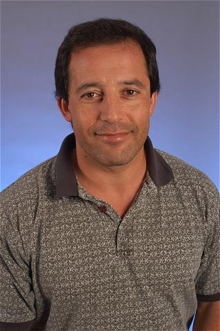

Invited Lectures
| Yuejin DuMoti Yung |
 |
| Dr. Yuejin Du Vice President of Technology Alibaba Group, China |
| Biography: Yuejin Du, Ph.D. is now working as Senior Researcher and VP of technology at Alibaba Group, focusing on Data Security, IoT security, and other new cybersecurity challenges. Dr. Du has more than 18 years of experience on Internet security, involved in the handling work of nearly all the large scale Internet incidents during 2001 to 2008. Dr. Du contributed a lot on national Internet security capacity building, leaded the project of national Internet intrusion monitoring and warning platform, played a key role on setting up national incident response cooperation framework, did a lot of work on public-awareness-raising, etc. Dr. Du was one of the several top level network security experts during many important events, including Olympic Game in 2008, the World Expo and the Asian Games in 2010, and G20 in 2016. |
| Title: Redefine Cybersecurity |
| Abstract: The rapid development of cyber technology represented by the Internet and Big data is now profoundly changing human society's each aspect. Cybersecurity is no exception when all fields of cyberspace are being redefined in this new wave. Based on the speaker’s almost 20-year experience in the field of information security, this presentation mainly introduces the security requirements form the Internet infrastructure to the Internet firm, discusses the changed and unchanged in cybersecurity and finally prospects the new trend of the future cybersecurity, from the perspective of the government, corporates and users. |
 |
| Prof. Moti Yung Snapchat Inc. & Columbia University, USA |
| Biography:Moti Yung is a Security and Privacy Scientist with Google, with main interests in Cryptography, Security, and Privacy. He graduated from Columbia University in 1988 and is an adjunct senior research faculty at Columbia till today. In parallel to Columbia he has had an industrial research career, working at places like IBM, RSA Labs. (EMC), Snap, and now Google. Yung is a fellow of ACM, of IEEE, of the International Association for Cryptologic Research (IACR) and the European Association for Theoretical Computer Science (EATCS). Among his awards are ACM's SIGSAC Outstanding Innovation Award in 2014, and 2018 IEEE Computer Society W. Wallace McDowell Award. His research covers broad areas: from the theory and foundations, to applied systems, and actual engineering efforts of cryptography, privacy, and secure systems. |
| Title: The Case for (and against) Science of Security |
| Abstract: Developing of Secure System has always been a hard problem and not so well understood. In light of this I will review the notion of "Science of Security" and will try to challenge the goals, needs, and thus methodologies in the area. What is "Science" and how to approach it has always been an interesting and controversial issue (regardless of area of study), let alone an area like security that is in itself itself not so well defined and quite broad). I will touch upon what we can learn from the philosophy of science, and what can we learn from the goals of security in actual systems (will try to give an example about some discussion points I will make). Then will discuss issues and non-issues in this very young sub-area. |
|  |
| Prof. Gene Tsudik University of California, Irvine, USA |
| Biography:Gene Tsudik is a Chancellor's Professor of Computer Science at the UC Irvine (UCI). He obtained his PhD in Computer Science from USC in 1991. Before coming to UCI in 2000, he was at IBM Zurich Research Laboratory (1991-1996) and USC/ISI (1996-2000). His research interests include numerous topics in security, privacy and applied cryptography. In 2009-2015, he was Editor-in-Chief of ACM Transactions on Information and Systems Security (TISSEC). He's a Fulbright Scholar, a Fulbight Specialist, a Fellow of ACM, IEEE and AAAS, plus a foreign member of Academia Europaea. He is the recipient of 2017 ACM SIGSAC Outstanding Contribution Award. Gene Tsudik is also the author of the first crypto-poem published as a refereed paper. |